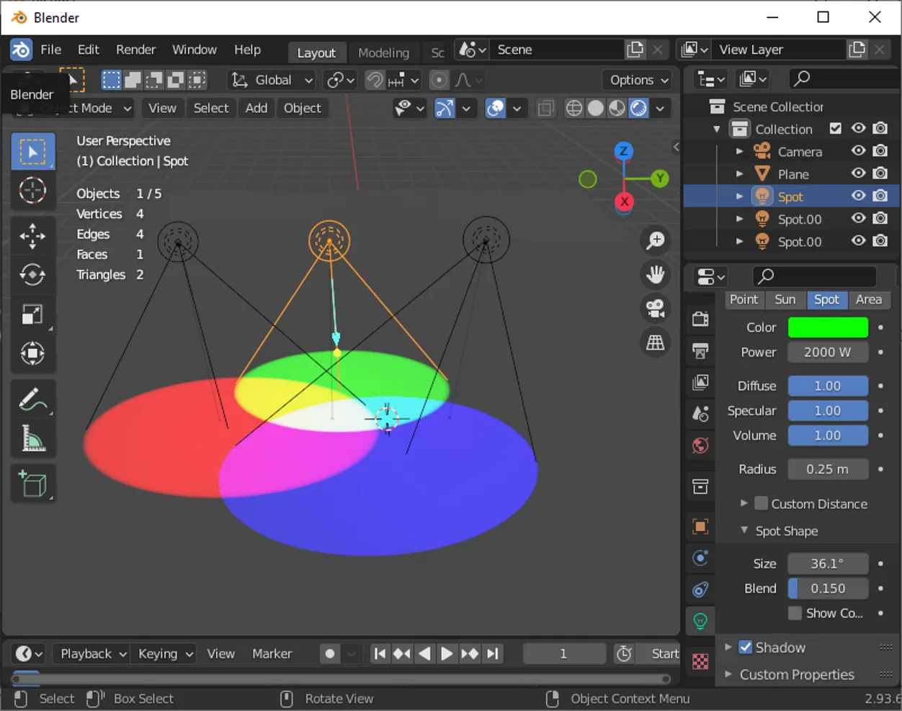
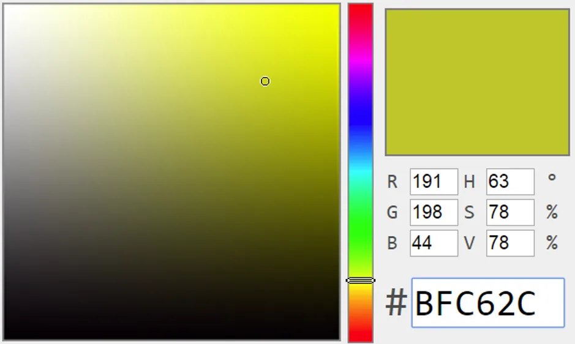
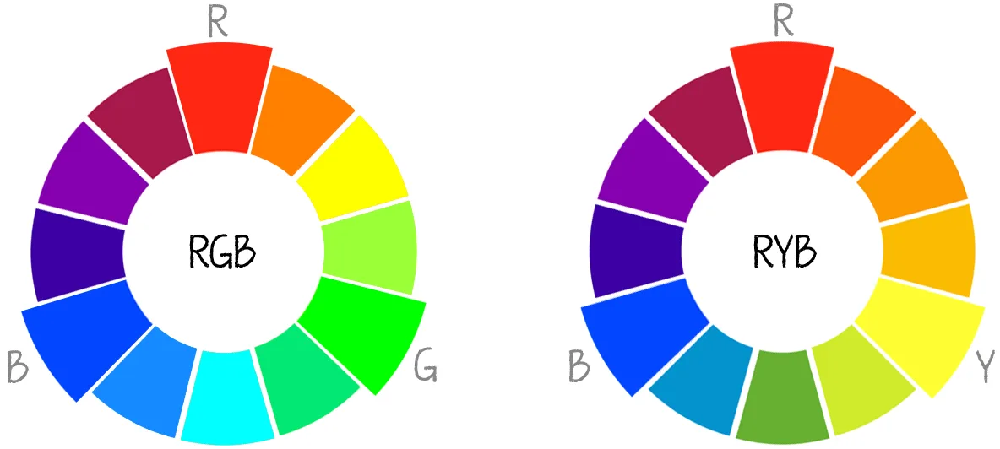

IT 280 · Computer Graphics and Multimedia · Week 3
Colour and digital images
How screens make colour from light, how computers store it as numbers, how designers choose colours that work together, and what resolution and bit depth really mean.
After this week you can
- Explain why screens use red, green and blue light, and why printers use cyan, magenta, yellow and black.
- Read and convert colour values between RGB, hex and HSV.
- Build a palette with a named harmony scheme and apply the 60-30-10 rule.
- Check text contrast against the accessibility standard (4.5 : 1).
- Calculate an image’s size in pixels and bytes from its resolution and bit depth.
- Explain sampling, aliasing and anti-aliasing.
بعد هذا الأسبوع ستكون قادرًا على أن:
- تشرح لماذا تستخدم الشاشات الضوء الأحمر والأخضر والأزرق، ولماذا تستخدم الطابعات الأحبار السماوي والأرجواني والأصفر والأسود.
- تقرأ قيم الألوان وتحوّل بينها في صيغ RGB والرمز الست عشري وHSV.
- تبني لوحة ألوان وفق مخطط انسجام مسمّى، وتطبّق قاعدة 60-30-10.
- تتحقّق من تباين النص وفق معيار إتاحة الوصول (4.5 : 1).
- تحسب حجم الصورة بالبكسل وبالبايت من دقتها وعمق البت فيها.
- تشرح أخذ العيّنات والتسنّن وتنعيم الحواف.
ترجمة عربية مساندة للشرح. المرجع هو النص الإنجليزي، وهو لغة الاختبارات والبرامج.
01 · Colour starts as light
Why three colours are enough for a screen
اللون ليس صفة في الجسم نفسه، بل هو تفسير الدماغ للضوء. والضوء المرئي نطاق ضيّق من الإشعاع الكهرومغناطيسي، يمتد من نحو 380 نانومترًا (البنفسجي) إلى نحو 700 نانومتر (الأحمر).
في مؤخرة العين ثلاثة أنواع من الخلايا الحساسة للون تُسمّى المخاريط (cones): نوع يستجيب أكثر للأطوال الموجية الطويلة (الأحمر)، ونوع للمتوسطة (الأخضر)، ونوع للقصيرة (الأزرق). وكل لون تراه هو نتيجة مقارنة الدماغ لشدّة تحفيز هذه الأنواع الثلاثة.
والشاشة تستفيد من ذلك؛ فكل بكسل (pixel) مكوّن من ثلاثة مصابيح دقيقة تُسمّى البكسلات الفرعية (sub-pixels): أحمر وأخضر وأزرق. وبتغيير سطوع كل منها تحفّز الشاشة المخاريط الثلاثة بنسب مختلفة، فترى ملايين الألوان. لا يحدث أي خلط فيزيائي؛ فالخلط يحدث في عينك.
هذا ما يُسمّى المزج الجمعي للألوان (additive colour): تبدأ من الأسود (كل المصابيح مطفأة) ثم تضيف الضوء. الضوء الأحمر والأخضر معًا يبدوان أصفر، والثلاثة بكامل شدتها تبدو أبيض.
تحقّق من فهمك: اضبط الأحمر والأخضر على 255 والأزرق على 0. ما اللون الذي يظهر حيث تتداخل الدوائر الثلاث، ولماذا؟
الإجابة: الأصفر. عند إطفاء الضوء الأزرق لا يصل إلى عينك إلا الضوء الأحمر والأخضر، ويقرأ الدماغ هذا المزيج أصفر. لا يصدر أي ضوء أصفر فعليًا.
ترجمة عربية مساندة للشرح. المرجع هو النص الإنجليزي، وهو لغة الاختبارات والبرامج.
Colour is not a property of an object. It is how your brain interprets light. Visible light is a narrow band of electromagnetic radiation, from about 380 nanometres (violet) to about 700 nanometres (red).
The back of your eye has three kinds of colour-sensitive cells, called cones. One kind responds most to long wavelengths (reds), one to medium wavelengths (greens) and one to short wavelengths (blues). Every colour you see is your brain comparing how strongly those three kinds of cone are stimulated.
A screen takes advantage of this. Each pixel is made of three tiny lights, called sub-pixels: one red, one green and one blue. By changing how bright each one is, the screen stimulates your three kinds of cone in different proportions, and you see millions of different colours. Nothing is mixed physically; the mixing happens in your eye.
This is called additive colour: you start from black (all lights off) and add light. Red and green light together look yellow. All three at full strength look white.
Try it · mix light
Move the sliders. Where the circles overlap, the light adds up.
Set red and green to 255 and blue to 0. What colour appears where all three circles overlap, and why?
Yellow. With the blue light off, only red and green light reach your eye, and your brain reads that combination as yellow. No yellow light is actually emitted.
02 · RGB numbers and hex codes
How a computer stores a colour
في نموذج RGB يُمثَّل اللون بثلاثة أعداد: سطوع الضوء الأحمر والأخضر والأزرق. وكل عدد منها يُسمّى قناة اللون (channel). تخزّن معظم الصور كل قناة في 8 بتات، فتعطي 28 = 256 مستوى، تُكتب من 0 إلى 255. وثلاث قنوات بثماني بتات تعني 24 بتًا لكل بكسل، أي 224 = 16,777,216 لونًا ممكنًا.
ويمكن كتابة اللون نفسه بثلاث طرق شائعة:
- العشري، كما في برامج تحرير الصور: rgb(226, 160, 74)
- الست عشري (hexadecimal)، كما في أدوات الويب والتصميم: #E2A04A. كل زوج من الخانات الست عشرية قناة واحدة، من 00 (أي 0) إلى FF (أي 255).
- الأعداد العشرية المُطبَّعة (normalised floats)، كما في OpenGL ولغات التظليل: glColor3f(0.886, 0.627, 0.290). تُقسَم كل قناة على 255 فتصبح قيمتها بين 0.0 و1.0.
مثال محلول · من RGB إلى الست عشري وإلى الأعداد العشرية
- نبدأ من rgb(226, 160, 74).
- الأحمر: 226 = 14 × 16 + 2، فالخانتان الست عشريتان E و2، أي E2.
- الأخضر: 160 = 10 × 16 + 0، أي A0. الأزرق: 74 = 4 × 16 + 10، أي 4A. إذن الرمز #E2A04A.
- الأعداد العشرية: 226 ÷ 255 = 0.886، و160 ÷ 255 = 0.627، و74 ÷ 255 = 0.290.
القول إن الألوان العشرية من 0.0 إلى 1.0 لها 100 خطوة فقط (0.00, 0.01 … 1.00). هذا غير صحيح؛ فالعدد العشري يمكن أن يأخذ أي قيمة بينهما مثل 0.627. ما يحدّ عدد الخطوات هو الشاشة وملف الصورة؛ فالشاشة القياسية ذات الثماني بتات تعرض 256 مستوى لكل قناة، فتُخزَّن 0.627 على أنها المستوى 160.
تحقّق من فهمك: ما قيمة #00FFFF بصيغة RGB العشرية، وما لونه؟
الإجابة: rgb(0, 255, 255): لا أحمر، وأخضر كامل، وأزرق كامل. الضوء الأخضر والأزرق معًا يبدوان سماويًا (cyan).
ترجمة عربية مساندة للشرح. المرجع هو النص الإنجليزي، وهو لغة الاختبارات والبرامج.
In the RGB model, a colour is three numbers: how bright the red, green and blue lights are. Each number is a channel. Most images store each channel in 8 bits, which gives 28 = 256 levels, written 0 to 255. Three channels of 8 bits make 24 bits per pixel, and 224 = 16,777,216 possible colours.
The same colour can be written in three common ways:
- Decimal, as in image editors:
rgb(226, 160, 74) - Hexadecimal, as in web and design tools:
#E2A04A. Each pair of hex digits is one channel, from00(0) toFF(255). - Normalised floats, as in OpenGL and shaders:
glColor3f(0.886, 0.627, 0.290). Each channel is divided by 255, so it runs from 0.0 to 1.0.
Worked example · RGB to hex and to floats
- Start with
rgb(226, 160, 74). - Red: 226 = 14 × 16 + 2 → hex digits E and 2 →
E2. - Green: 160 = 10 × 16 + 0 →
A0. Blue: 74 = 4 × 16 + 10 →4A. So the hex code is#E2A04A. - Floats: 226 ÷ 255 = 0.886, 160 ÷ 255 = 0.627, 74 ÷ 255 = 0.290.
“Float colours from 0.0 to 1.0 have only 100 steps (0.00, 0.01 … 1.00).” Not true: a float can hold any value in between, such as 0.627. What limits the steps is the screen and the image file. A standard 8-bit display still shows 256 levels per channel, so 0.627 is stored as level 160.
What is #00FFFF in decimal RGB, and what colour is it?
rgb(0, 255, 255): no red, full green, full blue. Green and blue light together look cyan.
03 · Print
CMYK: subtractive colour for ink and paper
الورق لا يُصدر ضوءًا بل يعكسه. فالورق الأبيض يعكس كل الضوء الساقط عليه، وكل حبر يمتص جزءًا من هذا الضوء، أي يطرحه. الحبر السماوي يمتص الأحمر، والأرجواني يمتص الأخضر، والأصفر يمتص الأزرق. هذا هو المزج الطرحي للألوان (subtractive colour): تبدأ من الأبيض، وكل حبر تضيفه يُنقص الضوء فتصبح النتيجة أغمق.
نظريًا، يمتص السماوي والأرجواني والأصفر معًا كل الضوء فينتج الأسود. أما عمليًا فينتج بنيٌّ داكن عكر مع هدر في الحبر، لذلك تضيف الطابعات حبرًا رابعًا هو الأسود، ويُرمز له بـ K (من key). ولهذا يُسمّى نموذج الطباعة CMYK.
وهذا يفسّر الألوان الأساسية التي تعلّمتها في حصة الفنون: الأحمر والأصفر والأزرق هي صيغة الرسّامين للألوان الأساسية الطرحية. فالشاشات والضوء تستخدم الأحمر والأخضر والأزرق، والطلاء والطباعة تستخدم السماوي والأرجواني والأصفر.
تحقّق من فهمك: يرسل مصمم ملصقًا زاهيًا مشبّعًا بصيغة RGB إلى المطبعة، فيخرج المطبوع باهتًا. لماذا؟
الإجابة: الحبر على الورق لا يستطيع إنتاج كل الألوان التي تُصدرها الشاشة. فأكثر ألوان الشاشة سطوعًا وتشبّعًا تقع خارج نطاق ألوان الطابعة (انظر القسم 11)، فتُحوَّل إلى أقرب الألوان التي تستطيع الأحبار إنتاجها.
ترجمة عربية مساندة للشرح. المرجع هو النص الإنجليزي، وهو لغة الاختبارات والبرامج.
Paper does not emit light; it reflects it. White paper reflects all the light falling on it. Each ink absorbs, or subtracts, part of that light. Cyan ink absorbs red, magenta ink absorbs green and yellow ink absorbs blue. This is subtractive colour: you start from white and every ink you add removes light, so the result gets darker.
In theory, cyan, magenta and yellow together absorb everything and make black. In practice they make a muddy dark brown and waste ink, so printers add a fourth ink, black, written K (for “key”). That is why the print model is called CMYK.
This also explains the primary colours you learned in art class: red, yellow and blue are the painter’s version of the subtractive primaries. Screens and light use red, green and blue; paint and print use cyan, magenta and yellow.
Try it · mix ink
Each ink removes one part of the light. More ink, darker result.Where all three overlap you get a dark brown-black, not a clean black. That is why printers add a separate black (K) ink.
| Additive (RGB) | Subtractive (CMYK) | |
|---|---|---|
| Used by | Screens, projectors, cameras, lights | Printers, paint, ink on paper |
| Starts from | Black (no light) | White (blank paper) |
| Adding a colour | Adds light, gets brighter | Absorbs light, gets darker |
| All primaries together | White | Near black (so K is added) |
A designer sends a bright, saturated RGB poster to a printer and the print looks duller. Why?
Ink on paper cannot reproduce every colour a screen can emit. The brightest, most saturated screen colours are outside the printer’s range (its gamut, see section 11), so they are converted to the nearest colours the inks can make.
04 · HSV
Colour the way designers think
نموذج RGB هو طريقة الحاسب في تخزين اللون، لكنه صعب على البشر. فإذا أردت «الأزرق نفسه لكن أفتح»، فليس واضحًا أي الأعداد الثلاثة تغيّر. أما نموذج HSV فيصف الألوان نفسها بثلاث خصائص يفهمها الناس:
- صبغة اللون (Hue، من 0 إلى 360°): أيّ عائلة لونية هو، وتُقاس بزاوية على عجلة الألوان. 0° أحمر، و120° أخضر، و240° أزرق.
- التشبّع (Saturation، من 0 إلى 100%): مدى نقاء اللون وحدّته. 100% هو اللون الزاهي، و0% رمادي.
- القيمة أو السطوع (Value، من 0 إلى 100%): مدى سطوع اللون. و0% أسود دائمًا.
نموذج HSV ليس مجموعة ألوان مختلفة، بل طريقة أخرى لوصف ألوان RGB نفسها، والبرامج تحوّل بين الاثنين فورًا. وله نموذج قريب هو HSL، يستخدم الإضاءة (lightness) بدل القيمة: في HSL تعني الإضاءة 100% الأبيض دائمًا، أما في HSV فالقيمة 100% هي أسطع نسخة من الصبغة.
ومن ممارسة الفن تأتي ثلاث كلمات مفيدة: التفتيح (tint) لون ممزوج بالأبيض، والتدرّج الرمادي (tone) لون ممزوج بالرمادي، والتعتيم (shade) لون ممزوج بالأسود. وبها تحصل على ألوان كثيرة مترابطة من صبغة واحدة.
تحقّق من فهمك: تحتاج لونًا لزرّ أزرق عند مرور المؤشر عليه، يكون الأزرق نفسه لكن أغمق قليلًا. أي خاصية واحدة من خصائص HSV تغيّر؟
الإجابة: خفّض القيمة (السطوع). تبقى الصبغة والتشبّع كما هما، فيبقى واضحًا أنه الأزرق نفسه. أما في RGB فستحتاج إلى تغيير الأعداد الثلاثة معًا.
ترجمة عربية مساندة للشرح. المرجع هو النص الإنجليزي، وهو لغة الاختبارات والبرامج.
RGB is how the machine stores colour, but it is hard for people to use. If you want “the same blue, but paler”, it is not obvious which of the three numbers to change. HSV describes the same colours in three terms people understand:
- Hue (0–360°): which colour family it is, as an angle around the colour wheel. 0° is red, 120° is green, 240° is blue.
- Saturation (0–100%): how pure or intense it is. 100% is the vivid colour; 0% is grey.
- Value (0–100%): how bright it is. 0% is always black.
HSV is not a different set of colours. It is another way of describing the same RGB colours, and software converts between the two instantly. A close cousin, HSL, uses lightness instead of value: in HSL, 100% lightness is always white, while in HSV 100% value is the brightest version of the hue.
From art practice come three useful words: a tint is a colour mixed with white, a tone is mixed with grey and a shade is mixed with black. They are how you get many related colours from one hue.
Try it · HSV explorer
Change one property at a time and watch the RGB numbers move.Tints (with white)
Tones (with grey)
Shades (with black)

You need a hover colour for a blue button that is the same blue but slightly darker. Which single HSV property do you change?
Lower the value (brightness). Hue and saturation stay the same, so it is clearly the same blue. In RGB you would have to change all three numbers together.
05 · Colour harmony
The colour wheel and six harmony schemes
الانسجام ترتيب مريح للأجزاء. والألوان التي تفتقد الانسجام تبدو إما مملّة وإما فوضوية. ويجد المصممون التوليفات المنسجمة باستخدام الهندسة على عجلة الألوان؛ فالصبغات الموضوعة بزوايا معيّنة بعضها من بعض تميل إلى التلاؤم. وتنقسم المخططات إلى مجموعتين.
الانسجام المتدرّج (هادئ، تباين منخفض):
- أحادي اللون (Monochromatic): صبغة واحدة تتغيّر في التشبّع والقيمة فقط. وهو الأسهل في الإتقان.
- الألوان المتجاورة (Analogous): صبغات متجاورة على العجلة، مثل الأزرق والأزرق المخضرّ والأخضر.
الانسجام التبايني (حيوي، تباين مرتفع):
- الألوان المتكاملة (Complementary): صبغتان متقابلتان على العجلة (بينهما 180°).
- المتكامل المنقسم (Split complementary): صبغة واحدة مع الصبغتين المجاورتين لمكمّلها. تباين قوي مع توتر أقل.
- الثلاثي (Triadic): ثلاث صبغات متساوية الأبعاد (بين كل منها 120°). اجعل واحدة منها سائدة واستخدم الأخريين للإبراز.
- الرباعي (Tetradic، أو المتكامل المزدوج): أربع صبغات تشكّل مستطيلًا على العجلة. وهو الأصعب في الموازنة؛ فاجعل لونًا واحدًا يقود.
يعتمد انسجام الألوان في هذا المقرر على عجلة الألوان التقليدية RYB (الأحمر، الأصفر، الأزرق)، وهي عجلة الفنانين في نظرية الألوان. ألوانها الأساسية الأحمر والأصفر والأزرق، والثانوية البرتقالي والأخضر والبنفسجي. والأزواج المتقابلة فيها: الأحمر والأخضر، والأصفر والبنفسجي، والأزرق والبرتقالي. أما منتقيات الألوان في البرامج (HSV، القسم 04) فتستخدم عجلة مختلفة مبنية على الضوء الأحمر والأخضر والأزرق، يقابل فيها الأزرقُ الأصفرَ. لذلك لا تبحث عن اللون المكمّل بإضافة 180° إلى الصبغة في منتقي HSV في برنامج Krita، بل ابنِ المخطط على عجلة RYB في العرض التفاعلي وانسخ رموز الألوان الست عشرية التي تعطيك إياها.
تحقّق من فهمك: اختار فريقك لوحة ثلاثية واستخدم الصبغات الثلاث بالتساوي على ملصق كبير. ما المشكلة، وكيف تعالجها؟
الإجابة: ثلاث صبغات قوية بكميات متساوية تتنافس على الانتباه، فيبدو الملصق فوضويًا. اجعل صبغة واحدة سائدة (نحو 60%)، واستخدم الثانية للمساحات الداعمة (نحو 30%)، واحتفظ بالثالثة للإبراز الصغير (نحو 10%)، مع تخفيف تشبّع اللون السائد في الغالب.
ترجمة عربية مساندة للشرح. المرجع هو النص الإنجليزي، وهو لغة الاختبارات والبرامج.
Harmony is a pleasing arrangement of parts. Colours that lack harmony look either boring or chaotic. Designers find harmonious combinations by using geometry on the colour wheel: hues placed at particular angles from each other tend to work together. The schemes fall into two groups.
Gradual harmony (calm, low contrast):
- Monochromatic: one hue, varied only in saturation and value. The easiest to get right.
- Analogous: hues next to each other, such as blue, blue-green and green.
Contrastive harmony (energetic, high contrast):
- Complementary: two hues opposite each other (180° apart).
- Split complementary: one hue plus the two hues beside its complement. Strong contrast, less tension.
- Triadic: three hues equally spaced (120° apart). Let one dominate and use the others as accents.
- Tetradic (double complementary): four hues forming a rectangle on the wheel. Hardest to balance; let one colour lead.
Colour harmony in this course uses the artist’s RYB wheel (red, yellow, blue), the traditional wheel of colour theory. Its primaries are red, yellow and blue; its secondaries are orange, green and violet. Opposite pairs are red–green, yellow–violet and blue–orange. Software colour pickers (HSV, section 04) use a different wheel based on red, green and blue light, where blue sits opposite yellow. So do not find a complement by adding 180° to the hue in Krita’s HSV picker: build the scheme on the RYB wheel below and copy the hex codes it gives you.
Try it · harmony generator
Pick a base hue and a scheme. The preview applies 60-30-10 (see section 06).Thursday 7 pm · Central Library. Talks, signings and 40 publishers.
RegisterDominant colour about 60%, secondary about 30%, accent about 10%.

Your team picks a triadic palette and uses all three hues equally on a large poster. What goes wrong, and how do you fix it?
Three strong hues in equal amounts compete for attention, so the poster feels chaotic. Let one hue dominate (about 60%), use the second for supporting areas (about 30%) and keep the third for small accents (about 10%), often with lower saturation for the dominant one.
06 · Using colour well
Proportion, meaning and contrast
قد تُستخدم لوحة ألوان جيدة استخدامًا سيئًا. وثلاث عادات تصنع الفرق:
- النسبة (60-30-10). لون سائد يغطي نحو 60% من التصميم، ولون ثانوي نحو 30%، ولون إبراز نحو 10%. لون الإبراز هو ما تتجه إليه العين أولًا، فاحتفظ به للعنصر المهم، مثل الزر الرئيسي. وهذه الصفحة تتبع القاعدة: رماديات مائلة إلى الأزرق الفاتح (60%)، وكحلي داكن وأزرق (30%)، وكهرماني هادئ للإبراز فقط (10%).
- الدلالة. الألوان الدافئة (الأحمر والبرتقالي والأصفر) توحي بالحيوية وتبدو متقدّمة، والألوان الباردة (الأزرق والأخضر) توحي بالهدوء وتبدو متراجعة. والدلالات تختلف أيضًا باختلاف الثقافة والسياق، فاختبرها مع جمهورك الفعلي.
- التباين. يجب أن يبرز النص عن خلفيته للجميع، ومنهم ضعاف البصر ومن لديهم عمى ألوان. وتقيس إرشادات إتاحة الوصول لمحتوى الويب (WCAG) ذلك بنسبة التباين (contrast ratio)، من 1 : 1 (لا تباين) إلى 21 : 1 (أسود على أبيض). يحتاج النص العادي إلى 4.5 : 1 على الأقل، ويحتاج النص الكبير (نحو 24 px، أو 19 px عريض) إلى 3 : 1 على الأقل.
الاعتماد على اللون وحده لنقل المعنى، مثل الأحمر لـ«خطأ» والأخضر لـ«صحيح». يصيب قصور تمييز الأحمر والأخضر نحو رجل من كل 12 وامرأة من كل 200 في المجتمعات ذات الأصول الأوروبية الشمالية؛ والنسب أقل في معظم المجتمعات الأخرى، لكنها تظل كافية لتهمّ في كل قاعة دراسية. وقد لا يرى هؤلاء الفرق. أضف كلمة أو أيقونة أيضًا، كما تفعل إجابات الاختبار في هذه الصفحة.
تحقّق من فهمك: نص رمادي فاتح (#8A93A3) على أبيض لا يجتاز الاختبار. ما أبسط حل يحافظ على هدوء التصميم؟
الإجابة: اجعل النص أغمق (خفّض قيمته) حتى تبلغ النسبة 4.5 : 1، مثلًا إلى #5A6679. أبقِ الصبغة نفسها ليبقى التصميم منتميًا إلى اللوحة نفسها.
ترجمة عربية مساندة للشرح. المرجع هو النص الإنجليزي، وهو لغة الاختبارات والبرامج.
A good palette can still be used badly. Three habits make the difference:
- Proportion (60-30-10). One dominant colour covers about 60% of the design, a secondary colour about 30%, and an accent about 10%. The accent is what the eye goes to first, so save it for the thing that matters, such as the main button. This page follows the rule: light blue-greys (60%), dark ink and blue (30%), and a muted amber only on highlights (10%).
- Meaning. Warm colours (reds, oranges, yellows) feel energetic and come forward; cool colours (blues, greens) feel calm and recede. Meanings also depend on culture and context, so test with your real audience.
- Contrast. Text must stand out from its background, for everyone, including people with low vision or colour-blindness. The Web Content Accessibility Guidelines (WCAG) measure this as a contrast ratio from 1 : 1 (no contrast) to 21 : 1 (black on white). Normal text needs at least 4.5 : 1; large text (about 24 px, or 19 px bold) needs at least 3 : 1.
Using colour alone to carry meaning, such as red for “wrong” and green for “right”. Red-green colour-vision deficiency affects about 1 in 12 men and 1 in 200 women in populations of Northern European ancestry; rates are lower in most other populations, but still large enough to matter in every class. Such viewers may not see the difference. Add a word or an icon as well, as the answers in this page’s quiz do.
Try it · contrast checker
Pick text and background colours. The ratio is calculated with the WCAG formula.—
Large heading text
Normal body text: can everyone in the room read this comfortably?
Light grey text (#8A93A3) on white fails. What is the simplest fix that keeps the design calm?
Darken the text (lower its value) until the ratio reaches 4.5 : 1, for example to #5A6679. Keep the hue the same so the design still feels like the same palette.
07 · Pixels and bit depth
How many colours can one pixel hold?
الصورة الرقمية شبكة من البكسلات (عناصر الصورة)، وكل بكسل يخزّن لونًا واحدًا. وعدد البتات المستخدمة لهذا اللون هو عمق البت (bit depth)، وهو يحدّد عدد الألوان الممكنة: n بت تعطي 2n لونًا.
| بت لكل بكسل | عدد الألوان الممكنة | الاستخدام المعتاد |
|---|---|---|
| 1 | 2 | رسوم خطية بالأبيض والأسود، الفاكس |
| 8 | 256 | تدرّج رمادي، أو GIF بلوحة ألوان |
| 24 (8 لكل قناة) | 16,777,216 | الصور والشاشات القياسية («الألوان الحقيقية») |
| 32 (24 + 8 للشفافية) | 16,777,216 مع الشفافية | PNG بخلفية شفافة، خامات الألعاب |
| 30 أو 48 (10 أو 16 لكل قناة) | أكثر من مليار | فيديو HDR، وتحرير الصور الاحترافي |
قلّة المستويات في كل قناة تظهر على شكل تشريط لوني (banding): تتحوّل التدرّجات الناعمة، مثل السماء، إلى أشرطة ظاهرة. جرّب ذلك في العرض التفاعلي بتقليل البتات لكل قناة.
ترجمة عربية مساندة للشرح. المرجع هو النص الإنجليزي، وهو لغة الاختبارات والبرامج.
A digital image is a grid of pixels (picture elements). Each pixel stores one colour. The number of bits used for that colour is the bit depth, and it decides how many different colours are possible: n bits give 2n colours.
| Bits per pixel | Possible colours | Typical use |
|---|---|---|
| 1 | 2 | Black-and-white line art, fax |
| 8 | 256 | Greyscale, or GIF with a palette |
| 24 (8 per channel) | 16,777,216 | Standard photos and screens (“true colour”) |
| 32 (24 + 8 alpha) | 16,777,216 + transparency | PNG with transparency, game textures |
| 30 or 48 (10 or 16 per channel) | Over a billion | HDR video, professional photo editing |
Too few levels per channel show up as banding: smooth gradients such as a sky turn into visible stripes. Try it below by lowering the bits per channel.
Try it · bit depth and banding
Fewer bits means fewer levels, and the gradient breaks into bands.08 · File size
How big is an image file?
الصورة غير المضغوطة تخزّن كل بكسل، لذلك يأتي حجمها مباشرة من ثلاثة أعداد:
size in bytes = width × height × bits per pixel ÷ 8
أي: الحجم بالبايت = العرض × الارتفاع × البتات لكل بكسل ÷ 8. والقسمة على 8 تحوّل البتات إلى بايتات. ثم تضغط صيغ مثل PNG وJPEG هذا الحجم، وهو موضوع الأسبوع الرابع، لكن الحجم غير المضغوط هو ما تشغله الصورة في الذاكرة أثناء استخدامها في برنامج أو لعبة.
مثال محلول · لقطة شاشة بدقة Full HD
- الدقة 1920 × 1080 = 2,073,600 بكسل.
- ألوان حقيقية: 24 بتًا لكل بكسل. 2,073,600 × 24 = 49,766,400 بت.
- ÷ 8 = 6,220,800 بايت.
- أي نحو 6.2 MB (بالقسمة على 1,000,000)، أو نحو 5.93 MiB (بالقسمة على 1,048,576، كما تفعل كثير من أنظمة التشغيل).
تحقّق من فهمك: خامة 4K (3840 × 2160) مع الشفافية (32 بتًا لكل بكسل): كم تشغل من الذاكرة تقريبًا؟
الإجابة: 3840 × 2160 × 32 ÷ 8 = 33,177,600 بايت، أي نحو 33 MB. ولهذا تضغط الألعاب الخامات، وتستخدم خامات أصغر حيث لا يلاحظ اللاعب.
ترجمة عربية مساندة للشرح. المرجع هو النص الإنجليزي، وهو لغة الاختبارات والبرامج.
An uncompressed image stores every pixel, so its size follows directly from three numbers:
size in bytes = width × height × bits per pixel ÷ 8
Dividing by 8 converts bits to bytes. Formats such as PNG and JPEG then compress this, which is the topic of week 4, but the uncompressed size is what the image occupies in memory while a program or game uses it.
Worked example · a Full HD screenshot
- Resolution 1920 × 1080 = 2,073,600 pixels.
- True colour: 24 bits per pixel. 2,073,600 × 24 = 49,766,400 bits.
- ÷ 8 = 6,220,800 bytes.
- ≈ 6.2 MB (dividing by 1,000,000), or ≈ 5.93 MiB (dividing by 1,048,576, as many operating systems do).
Try it · size calculator
Change the numbers and check your own working.A 4K texture (3840 × 2160) with transparency (32 bits per pixel): about how much memory does it take?
3840 × 2160 × 32 ÷ 8 = 33,177,600 bytes, about 33 MB. That is why games compress textures and use smaller ones where players will not notice.
09 · Resolution
Resolution, PPI and printing
الدقة (resolution) هي عدد البكسلات في الصورة، وتُكتب العرض × الارتفاع، مثل 1920 × 1080. وهي لا تقول شيئًا عن الحجم الفعلي حتى تقرّر مدى كثافة عرض هذه البكسلات أو طباعتها.
وهذه الكثافة هي PPI (بكسل لكل بوصة). فالصورة نفسها بعرض 3000 بكسل يبلغ عرضها 10 بوصات عند 300 PPI، ونحو 42 بوصة عند 72 PPI. أما DPI (نقطة لكل بوصة) فتصف بدقة نقاط حبر الطابعة، لكن الناس كثيرًا ما يستخدمونها بمعنى PPI.
في الطباعة، الهدف المعتاد 300 PPI لما يُنظر إليه عن قرب (المطويات والكتب)، وأقل من ذلك للملصقات الكبيرة التي تُرى من بعيد. أما في الشاشات فالـPPI ثابت تحدّده الشاشة، فلا يهمّ إلا أبعاد الصورة بالبكسل.
مثال محلول · ملصق A4 بدقة 300 PPI
- مقاس A4 هو 21.0 × 29.7 cm، والبوصة 2.54 cm.
- العرض: 21.0 ÷ 2.54 = 8.27 in × 300 = 2480 بكسل.
- الارتفاع: 29.7 ÷ 2.54 = 11.69 in × 300 = 3508 بكسل.
- إذن أنشئ مستندك بمقاس 2480 × 3508 بكسل.
تغيير قيمة PPI في برنامج التحرير وتوقّع صورة أوضح. إذا بقي عدد البكسلات كما هو فلن يصبح شيء أوضح؛ أنت تغيّر حجم الطباعة فقط. وتكبير صورة صغيرة يضيف بكسلات مُختلَقة ويجعلها ضبابية.
ترجمة عربية مساندة للشرح. المرجع هو النص الإنجليزي، وهو لغة الاختبارات والبرامج.
Resolution is the number of pixels in an image, written width × height, such as 1920 × 1080. It says nothing about physical size until you decide how densely to display or print those pixels.
PPI (pixels per inch) is that density. The same 3000-pixel-wide photo is 10 inches wide at 300 PPI but about 42 inches wide at 72 PPI. DPI (dots per inch) strictly describes printer ink dots, but people often use it to mean PPI.
For print, the common target is 300 PPI for close viewing (flyers, books) and lower for large posters viewed from a distance. For screens, PPI is fixed by the display, so only the pixel dimensions matter.
Worked example · an A4 poster at 300 PPI
- A4 is 21.0 × 29.7 cm. One inch is 2.54 cm.
- Width: 21.0 ÷ 2.54 = 8.27 in × 300 = 2480 pixels.
- Height: 29.7 ÷ 2.54 = 11.69 in × 300 = 3508 pixels.
- So set up your document at 2480 × 3508 pixels.
Try it · print size calculator
Changing the PPI number in an editor and expecting a sharper image. If the pixel count stays the same, nothing gets sharper; you only change the printed size. Enlarging a small image adds invented pixels and makes it blurry.
10 · Sampling and aliasing
Why edges look jagged, and how to smooth them
الشكل مثل الدائرة ناعم ومتصل، أما شبكة البكسلات فليست كذلك. ولرسم الدائرة يأخذ الحاسب عيّنات منها (sampling): يسأل عن كل بكسل «هل هذا البكسل داخل الشكل؟» فيلوّنه أو يتركه.
مع عيّنة واحدة لكل بكسل يكون كل بكسل إما داخل الشكل تمامًا وإما خارجه تمامًا، فتتحوّل الحواف المنحنية والمائلة إلى درجات سلّم. هذا هو التسنّن (aliasing)، ويُسمّى أحيانًا «الحواف المسنّنة» (jaggies). ويزداد سوءًا كلما كانت الشبكة أخشن.
أما تنعيم الحواف (anti-aliasing) فيأخذ عدة عيّنات داخل كل بكسل، ويلوّنه بحسب نسبة العيّنات التي تقع داخل الشكل. فتصبح بكسلات الحافة بدرجات وسيطة، وتقرأ عينك الحافة ناعمة. وتفعل الألعاب وبرامج التصيير ثلاثي الأبعاد الشيء نفسه بتقنيات مثل MSAA، التي ستتعرّف عليها في الأسبوع الثاني عشر.
ترجمة عربية مساندة للشرح. المرجع هو النص الإنجليزي، وهو لغة الاختبارات والبرامج.
A shape such as a circle is smooth and continuous, but the pixel grid is not. To draw the circle, the computer samples it: for each pixel it asks “is this pixel inside the shape?” and colours it in or not.
With one sample per pixel, every pixel is either fully in or fully out, so curved and slanted edges become staircases. This is aliasing, often called “jaggies”. It gets worse as the grid gets coarser.
Anti-aliasing takes several samples inside each pixel and colours the pixel by the fraction that falls inside the shape. Edge pixels become in-between shades, and your eye reads the edge as smooth. Games and 3D renderers do the same with techniques such as MSAA, which you will meet in week 12.
Try it · see the pixels
Coarse grid, one sample per pixel: jagged. Turn on anti-aliasing to compare.At grid size 64 the jaggies almost disappear: more pixels means each step is smaller. That is why high-resolution screens look smoother.
11 · Colour spaces
Colour spaces and gamut
الأعداد rgb(255, 0, 0) تعني «أحمر كامل»، لكن ما مدى احمرار الأحمر الكامل؟ هذا يعتمد على الجهاز. فضاء الألوان (colour space) يربط الأعداد بألوان حقيقية قابلة للقياس، ونطاق الألوان (gamut) هو مدى الألوان الذي يستطيع تمثيله.
- sRGB هو المعيار للويب ولمعظم الشاشات. وإذا لم تكن تعرف أين ستُعرض الصورة، فاستخدم sRGB.
- Display P3 نطاق أوسع تستخدمه كثير من الهواتف والحواسيب المحمولة الحديثة؛ فقد تكون ألوانه الحمراء والخضراء أكثر حيوية.
- نطاقات الطباعة CMYK أصغر من sRGB في مناطق كثيرة، ولهذا قد تبدو ألوان الشاشة الزاهية أبهت في الطباعة.
عمليًا: اعمل بـsRGB في مشاريع الشاشة، وضمِّن ملف تعريف الألوان عند التصدير، وعاين العمل بـCMYK قبل إرسال أي شيء إلى الطباعة.
ترجمة عربية مساندة للشرح. المرجع هو النص الإنجليزي، وهو لغة الاختبارات والبرامج.
The numbers rgb(255, 0, 0) mean “full red”, but how red is full red? It depends on the device. A colour space pins the numbers to real, measurable colours, and its gamut is the range of colours it can represent.
- sRGB is the standard for the web and most screens. If you do not know where an image will be shown, use sRGB.
- Display P3 is a wider gamut used by many recent phones and laptops: its reds and greens can be more vivid.
- CMYK print gamuts are smaller than sRGB in many areas, which is why vivid screen colours can look duller in print.
In practice: work in sRGB for screen projects, embed the colour profile when you export, and preview in CMYK before sending anything to print.
12 · AI in this topic
Generative and enhancement models for images
معظم مولّدات الصور نماذج انتشار (diffusion): في التدريب يُضاف الضجيج إلى ملايين الصور تدريجيًا وتتعلّم الشبكة إزالته، وعند التوليد تبدأ من ضجيج عشوائي خالص وتزيله على خطوات كثيرة موجَّهة بنص الطلب. والناتج صورة نقطية عادية بشبكة بكسلات ثابتة، غالبًا sRGB 8-bit، فيسري عليها كل ما تعلّمته هذا الأسبوع: الدقة قبل الطباعة، وفضاء الألوان، والتباين.
أدوات تحرير بالفكرة نفسها: الملء التوليدي (inpainting) يعيد توليد منطقة تحدّدها، والتوسيع (outpainting) يمدّ اللوحة، والتجزئة تحدّد حدود الشخص أو الجسم، وبها تعمل إزالة الخلفية بنقرة، إضافة إلى تلوين الصور القديمة. ومن الأدوات المجانية إضافة Krita AI Diffusion مفتوحة المصدر، وتعمل على معالجك الرسومي أو عبر خدمة سحابية مدفوعة، ويقابلها تجاريًا Generative Fill في Photoshop.
التكبير الفائق: مكبّرات مثل Upscayl المجاني تكبّر الصورة 2–4 مرات وتبدو أحدّ من الاستيفاء التكعيبي، لكن التفاصيل المضافة متوقَّعة من بيانات التدريب لا مستعادة من ملفك؛ فحدّ أخذ العيّنات الذي درسته باقٍ. يصلح ذلك لخلفية ملصق، لا لوجوه أشخاص حقيقيين أو نص صغير أو دليل أو قياس.
ما تفحصه في صور الذكاء الاصطناعي: ألوان لا تناسب الهوية، وحروف ليست نصًا حقيقيًا، وأصابع زائدة، ولوحات ألوان تفشل في التباين. اختبر أي لوحة مقترحة بنفسك (التناغم وتباين 4.5 : 1)، وأفصح عن الأداة كما يطلب الأسبوع 1.
ترجمة عربية مساندة للشرح. المرجع هو النص الإنجليزي، وهو لغة الاختبارات والبرامج.
Most image generators are diffusion models. During training, noise is added to millions of images step by step and the network learns to remove it. To generate, it starts from pure random noise and removes noise in many small steps, guided by your text prompt. The result is an ordinary raster image: a fixed grid of pixels, usually 8-bit sRGB. Everything from this week therefore applies to it: check its pixel size before printing, its colour space, and its contrast.
Editing tools built on the same idea. Inpainting (generative fill) regenerates a region you select, for example to remove a sign; outpainting extends the canvas; segmentation finds the outline of a person or object, which is how one-click background removal works; colourisation adds colour to black-and-white photos. In free software, the open-source Krita AI Diffusion plugin adds generative fill, expansion and upscaling to Krita, running on your own GPU or on a paid cloud service; Photoshop’s Generative Fill (Adobe Firefly) is the commercial equivalent.
Super-resolution. AI upscalers such as the free, open-source Upscayl enlarge an image 2–4 times and look much sharper than bicubic resampling. The extra detail, though, is predicted from what similar images looked like in training, not recovered from your file: the sampling limit you met in this week still holds. That is fine for a poster background, but not for faces of real people, small text, evidence or anything you will measure.
What to check in AI images. Plausible but off-brand colours, letters that are not real text, extra fingers or broken symmetry, and palettes that fail contrast rules. Treat an AI-suggested palette like any other: test harmony and the 4.5 : 1 text contrast yourself, and declare the tool as Week 1 requires.
A 640 × 480 photo is upscaled 4× by an AI tool to 2560 × 1920. Is it now as good as a photo taken at 2560 × 1920?
No. The pixel count matches, but the added detail was predicted by the model, so fine textures, text and faces may be invented or wrong. A real 2560 × 1920 photo recorded that detail from the scene.
Summary
What to remember
الأسبوع الثالث في ثماني نقاط
- الشاشات تضيف الضوء (RGB، تبدأ من الأسود). الطباعة تطرح الضوء (CMYK، تبدأ من الأبيض).
- القناة ذات الثماني بتات فيها 256 مستوى؛ والألوان بعمق 24 بتًا فيها 16.7 مليون لون.
- الرمز الست عشري #RRGGBB وأعداد OpenGL العشرية (القيمة ÷ 255) هي الألوان نفسها مكتوبة بطرق مختلفة.
- نموذج HSV (الصبغة، التشبّع، القيمة) أسهل من RGB في قرارات التصميم.
- ستة مخططات للانسجام: أحادي اللون، المتجاورة، المتكاملة، المتكامل المنقسم، الثلاثي، الرباعي.
- طبّق قاعدة 60-30-10، وتحقّق أن تباين النص لا يقل عن 4.5 : 1.
- حجم الملف = العرض × الارتفاع × البتات لكل بكسل ÷ 8. بكسلات الطباعة = البوصات × PPI.
- الحواف المسنّنة تسنّن؛ وتنعيم الحواف يأخذ عدة عيّنات لكل بكسل ليجعلها ناعمة.
ترجمة عربية مساندة للشرح. المرجع هو النص الإنجليزي، وهو لغة الاختبارات والبرامج.
Week 3 in eight points
- Screens add light (RGB, start from black). Print subtracts light (CMYK, start from white).
- One 8-bit channel has 256 levels; 24-bit colour has 16.7 million colours.
- Hex
#RRGGBBand OpenGL floats (value ÷ 255) are the same colours written differently. - HSV (hue, saturation, value) is easier for design decisions than RGB.
- Six harmony schemes: monochromatic, analogous, complementary, split complementary, triadic, tetradic.
- Apply 60-30-10 and check text contrast is at least 4.5 : 1.
- File size = width × height × bits per pixel ÷ 8. Print pixels = inches × PPI.
- Jagged edges are aliasing; anti-aliasing samples several points per pixel to smooth them.
Before the quiz
Common mistakes to avoid
| Mistake | Why it is wrong | Do this instead |
|---|---|---|
| Picking colours one by one “because they look nice” | Colours chosen in isolation rarely work together | Start from one base hue and a named harmony scheme |
| Using all palette colours equally | Nothing stands out, so the eye has nowhere to go | Apply 60-30-10; keep the accent for what matters |
| Grey text on white “to look elegant” | Often below 4.5 : 1, hard to read | Check the ratio; darken the text, keep the hue |
| Raising PPI to sharpen an image | Pixel count is unchanged | Start with enough pixels for the print size |
| Saving gradients at low bit depth | Causes banding | Keep 8 bits per channel or more for gradients |
| Finding a complement by adding 180° to the hue in a software HSV picker | Software pickers use the RGB light wheel, which places hues differently from the RYB wheel | Build the scheme on the RYB wheel and copy its hex codes |
Check yourself
Seven questions, marked on the page
Lab 3
Palette, contrast and resolution
يحوّل هذا اللاب أفكار الأسبوع إلى بداية ملصق مشروعك 1: لوحة ألوان منسجمة، ومسودة ملصق بقاعدة 60-30-10، وفحص التباين، ومقارنة أحجام الملفات.
| ما تحتاجه | Krita، وفكرة فعالية مشروعك 1، وهذه الصفحة مفتوحة لاستخدام مولّد الألوان وفاحص التباين والحاسبات. |
| ما ستسلّمه | رابط مستودعك، وفيه لوحة الألوان والمسودة والصادرات وملاحظات README. |
| التقييم | جدول التقييم في نهاية القسم (10 درجات، CLO 2.1). |
أجزاء اللاب
الجزء A · ابنِ لوحة ألوان منسجمة (20 دقيقة)
اختر صبغة أساسية تناسب فعاليتك ومخططًا من مولّد الانسجام في القسم 05 (على عجلة RYB، واكتب جملة تبرّر اختيارك، ثم ارسم مربعات الألوان الخمسة في Krita وسجّل رموزها الست عشرية وأدوارها.
نقطة التحقق: صورة لوحة الألوان وخمسة رموز مع أدوارها في README.
الجزء B · صمّم مسودة ملصق بقاعدة 60-30-10 (30 دقيقة)
أنشئ مستندًا بمقاس A4 عند 300 PPI (2480 × 3508)، واجعل اللون السائد نحو 60% والثانوي 30% ولون الإبراز للعنصر الأهم فقط، وأضف العنوان والتاريخ والمكان.
نقطة التحقق: اسأل زميلك ماذا يلاحظ أولًا؛ إن لم يكن عنصر الإبراز فعدّل النِّسب.
الجزء C · افحص تباين كل نص (15 دقيقة)
اقرأ لون كل نص وخلفيته وأدخلهما في فاحص التباين في القسم 06، وعدّل القيمة (لا الصبغة) حتى تنجح كل الأزواج، وسجّل النسب قبل التعديل وبعده.
نقطة التحقق: كل أزواج النصوص ناجحة، والنسب قبل وبعد مسجّلة.
الجزء D · صدّر وقارن أحجام الملفات (20 دقيقة)
صدّر الملصق بثلاث طرق (300 PPI, 72 PPI, indexed PNG)، وسجّل أحجامها، واحسب الحجم غير المضغوط، واشرح في جملتين لماذا الملفات المحفوظة أصغر.
نقطة التحقق: ثلاث صادرات وأحجامها وحسابك وشرح قصير.
الجزء E · احفظ وسلّم (5 دقيقة)
احفظ التغييرات وارفعها، وسلّم الرابط في تكليف اللاب 3.
اقرأ هدف كل جزء هنا بالعربية، ثم نفّذ الخطوات المرقّمة بالإنجليزية كما هي، لأن أسماء القوائم والأزرار في البرامج بالإنجليزية. إذا تعثّرت فابقَ في وقت الدعم (آخر 30 دقيقة) ليساعدك المحاضر.
ترجمة عربية مساندة للشرح. المرجع هو النص الإنجليزي، وهو لغة الاختبارات والبرامج.
This lab turns the week’s ideas into the start of your Project 1 poster. Work through the parts in order; each step says where to click and what you should see.
Menu names are for Krita 5. If yours differ, ask the TA.
AI tools are optional in this lab. Use only free tools, and record every use in the AI-use log (tool, date, prompt, what you kept and what you changed). Graded steps must show your own skill. You may ask AI for palette suggestions or a background image for the poster. Test any suggested palette for harmony and contrast yourself; the layout and type must be yours.
أدوات الذكاء الاصطناعي اختيارية في هذا اللاب: استخدم الأدوات المجانية فقط، وسجّل كل استخدام في سجل استخدام الذكاء الاصطناعي (الأداة والتاريخ والموجّه وما أبقيته وما غيّرته). أما الخطوات المقيَّمة فيجب أن تُظهر مهارتك أنت. يمكنك طلب اقتراحات لوحة ألوان أو صورة خلفية للملصق من الذكاء الاصطناعي، لكن اختبر التناغم والتباين بنفسك، ويبقى التخطيط والخطوط من عملك.
Part A · Build a harmonious palette
20 min- Open the harmony generator in section 05 of this page. Choose a base hue that suits your Project 1 event, then pick a scheme.five colours on the wheel and in the poster preview.
- Write one sentence explaining why the scheme fits your event (calm, energetic, formal…).
- In Krita, create a small new document: , any size. Draw five squares and fill each with one palette colour: click the foreground colour, type the hex code into the hex field, then use the fill tool.five coloured squares.
- Export it as . In your repository README, list the five hex codes with their role: dominant, secondary or accent.
Checkpoint. A palette image and five hex codes with roles in your README.
Part B · Lay out a poster draft with 60-30-10
30 min- In Krita choose . Set width 2480 px, height 3508 px and resolution 300 PPI. This is A4 at print quality (see section 09).a tall white canvas.
- Fill the large background areas with your dominant colour (about 60% of the poster).
- Use the secondary colour for supporting blocks such as a band or a panel (about 30%).
- Use the accent colour only on the one thing that must stand out, such as the date or a call to action (about 10%).
- Add the event title, date, place and one short line of text. Save as .a poster where your eye goes to the accent first.
Checkpoint. Ask the person next to you what they notice first. If it is not your accent element, adjust the proportions.
Part C · Check every text contrast
15 min- For each text-and-background pair, read both colours’ hex codes with Krita’s colour picker.
- Enter each pair in the contrast checker in section 06.a ratio and pass or fail labels.
- If normal text is below 4.5 : 1, or large text below 3 : 1, darken or lighten the text (change its value, keep the hue) until it passes.
- Record every pair in your README: the colours, the ratio before and the ratio after.
Checkpoint. Every text pair passes, and the before and after ratios are recorded.
Part D · Export and compare file sizes
20 min- Export the poster with as .
- Use , set the resolution to 72 PPI while keeping the print size, export as , then undo the scaling.the pixel dimensions drop to about 595 × 842.
- Export again as PNG and tick (256 colours), as .possible banding in any gradients.
- Write down each file’s size from its file properties. Use the calculator in section 08 to work out the uncompressed size of the 300 PPI version.
- In two sentences, explain why the saved PNG files are smaller than your calculation. Hint: compression, the topic of week 4.
Checkpoint. Three exports, their file sizes, your calculation and a short explanation in your README.
Part E · Commit and submit
5 min- Commit with the summary and push.
- Submit the repository link in the Lab 3 assignment on Blackboard.
Minutes 90–120 are support time. If you are not finished, stay: the instructor works with you one-to-one until you submit. If you are finished, check a classmate’s work against the rubric below, then you may leave.
Before you submit
The ticks stay on this page only; they are for you.
If something goes wrong
| Problem | Why it happens | Fix |
|---|---|---|
| The colours look different after export | Colour profile not embedded | Export in sRGB and keep the profile when Krita asks |
| The exported file is huge | 300 PPI A4 has about 8.7 million pixels | That is expected; PNG compression helps, and week 4 covers formats |
| I cannot find the hex field | The colour selector panel is hidden | Settings › Dockers, then show a colour selector docker |
| My contrast fails for every option | Hue changes do not help much | Change the value (lighter or darker), not the hue |
Rubric (10 points)
| Criterion | Full (2) | Partial (1) | Missing (0) |
|---|---|---|---|
| Palette | Named scheme, five hex codes, roles, reason | Palette without scheme or roles | Missing |
| 60-30-10 | Clear dominant, secondary and accent | Proportions unclear | Missing |
| Contrast | All pairs pass, before and after recorded | Some pairs fail or are not recorded | Not checked |
| Exports and sizes | Three exports, sizes and calculation | Some missing | Missing |
| Explanation | Correct reasoning about compression and pixels | Partly correct | Missing |
Glossary · المصطلحات
Key terms in English and Arabic
| English | Meaning | العربية |
|---|
Sources
Sources for this week
- Parekh, R. (2025). Principles of Multimedia (3rd ed.). CRC Press. Colour models and digital image representation.
- Marschner, S., & Shirley, P. (2021). Fundamentals of Computer Graphics (5th ed.). CRC Press. Colour, sampling and anti-aliasing.
- W3C (2023). Web Content Accessibility Guidelines (WCAG) 2.2, success criterion 1.4.3 Contrast (Minimum). w3.org/TR/WCAG22. Contrast formula and thresholds used in the checker.
- MedlinePlus Genetics. Color vision deficiency. U.S. National Library of Medicine. medlineplus.gov. Prevalence figures in section 06.
- IEC 61966-2-1:1999. Default RGB colour space: sRGB. International Electrotechnical Commission.
- AlGhamdi, R. (2022). Understanding Colors, CPIT285 lecture notes, King Abdulaziz University. Colour wheel and harmony schemes.
- Illustrations: the RGB cube and all demos are drawn by this page; other drawings are original and made for IT 280 (2027).
- Acly. Generative AI for Krita (krita-ai-diffusion plugin, GPL-3.0). github.com/Acly/krita-ai-diffusion.
- Upscayl: free and open-source AI image upscaler. upscayl.org.
Authorship and AI use for all course pages are declared on the course home page.